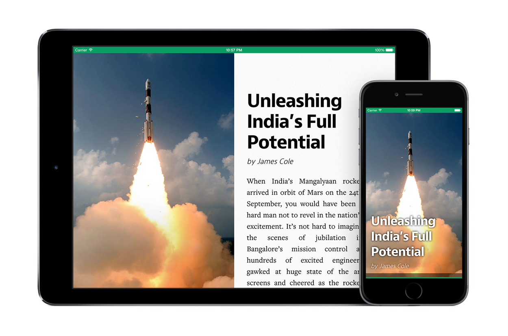

Black & White


Download the App
For the first time ever, St. Paul's School's premiere magazine, Black & White, is available to read in Newsstand on iOS, for free.
PDFs
PDF versions are also available to download below.